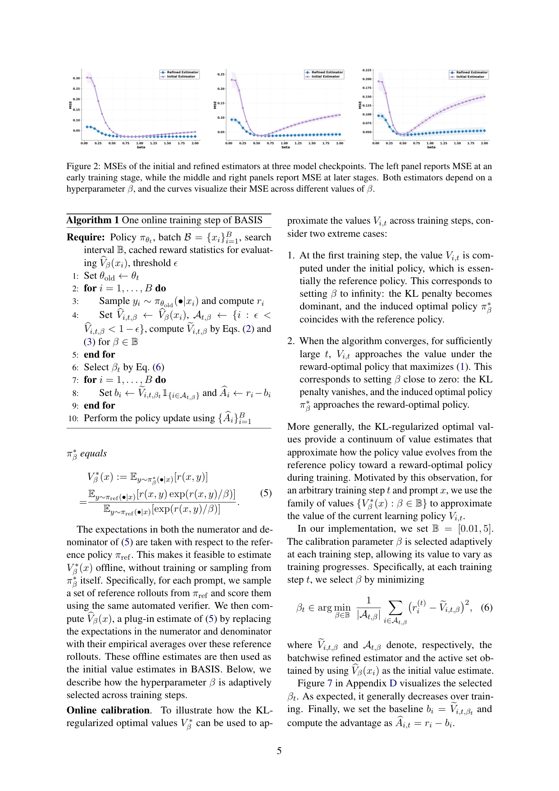
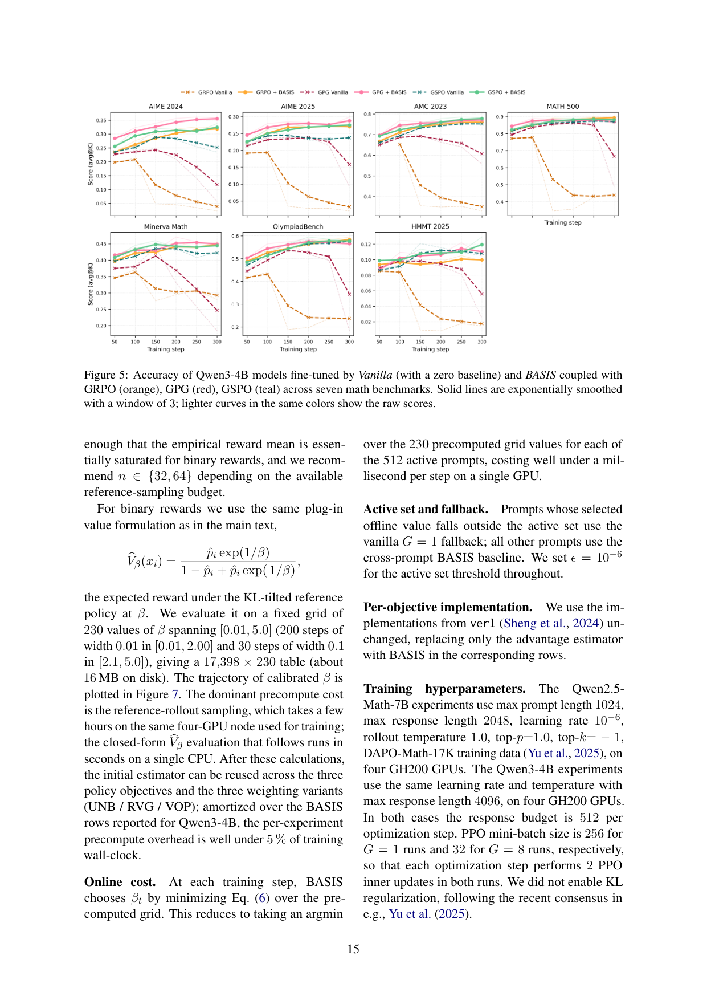
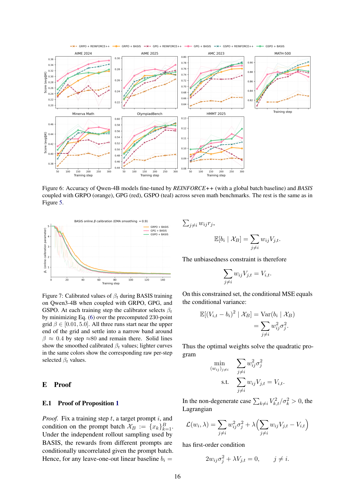
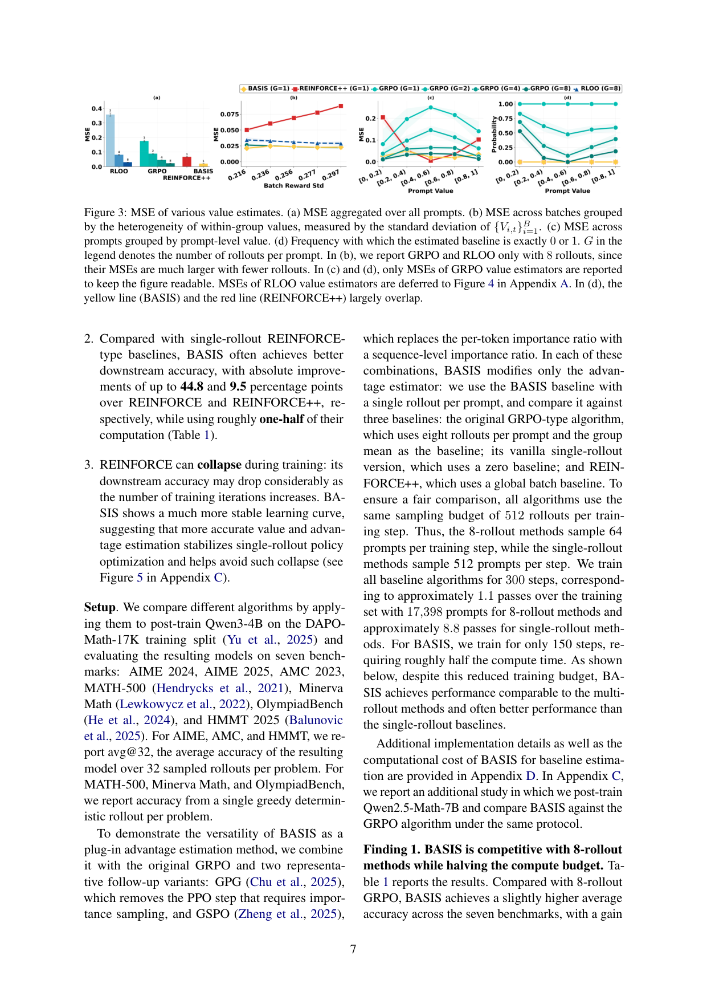

BASIS introduces a batchwise advantage estimator that achieves multi-rollout sample efficiency with single-rollout computational cost, addressing the core tradeoff in RLVR for LLM reasoning.
本文提出BASIS，一种无需评论家的强化学习算法，通过批量内共享奖励信息实现单次采样下的高效价值估计。该方法将价值估计的均方误差降低69%，以单次采样达到八次采样的组均值估计器性能，为LLM推理的强化学习提供了计算效率与样本效率兼得的新方案。
Deep Note — basis
Key Takeaways - BASIS is a critic-free RLVR algorithm that uses only one rollout per prompt but shares reward information across the batch to estimate value baselines. - It reduces MSE in value estimation by 69% compared to REINFORCE++ and achieves lower MSE with one rollout than group mean estimators with 8 rollouts. - The batchwise advantage estimator is a plug-in component that stabilizes training and mitigates collapse, often outperforming single-rollout baselines and matching multi-rollout GRPO-type methods. - BASIS is robust to reward heterogeneity and prompt difficulty, producing informative advantage estimates without additional computational cost during online training.
0) Metadata
- Title: BASIS: Batchwise Advantage Estimation from Single-Rollout Information Sharing for LLM Reasoning
- Alias: basis
- Authors: Shijin Gong, Erhan Xu, Kai Ye, Francesco Quinzan, Giulia Livieri, Chengchun Shi
- arXiv ID: 2605.27293
- Published:
- Links:
- Abs: https://arxiv.org/abs/2605.27293
- HTML: https://arxiv.org/html/2605.27293v1
- PDF: https://arxiv.org/pdf/2605.27293
- Tags: reinforcement-learning, llm-reasoning, value-estimation, batchwise-advantage, rlvr
- Domains: ai_safety
- Rating: 4/5 (base 1 + quality 2 + observation 1)
1) Why-read
BASIS introduces a batchwise advantage estimator that achieves multi-rollout sample efficiency with single-rollout computational cost, addressing the core tradeoff in RLVR for LLM reasoning.
2) CRGP
C — Context
Reinforcement learning with verifiable rewards (RLVR) has become standard for improving LLM reasoning, popularized by DeepSeekMath and DeepSeek-R1. Existing algorithms face a tradeoff between computational efficiency (single-rollout critic-free methods) and sample efficiency (multi-rollout or critic-based methods).
R — Related work
- PPO uses a critic network for value estimation, improving sample efficiency at higher computational cost.
- GRPO samples multiple rollouts per prompt and uses average reward as a baseline, removing the critic but requiring more rollouts.
- REINFORCE++ uses a batch-level baseline but achieves higher MSE than BASIS.
- Other works borrow reward information across iterations or prompts, but BASIS achieves substantially lower MSE.
G — Gap
Existing RLVR algorithms face a fundamental tradeoff: multi-rollout methods (e.g., GRPO) and critic-based methods (e.g., PPO) improve sample efficiency at high computational cost, while single-rollout critic-free methods are cheaper but yield noisy value estimates and unstable policy updates. No prior method achieves multi-rollout-level sample efficiency with only one rollout per prompt.
P — Proposal
BASIS proposes a batchwise advantage estimator that uses reward information from all prompts in a batch to estimate value baselines, with a weight matrix optimized to minimize MSE and diagonal entries set to zero to exclude a prompt's own reward. It combines offline estimation with online calibration, enabling sample-efficient value estimation with a single rollout per prompt.
---
4) Experiments
Main results
BASIS reduces MSE in value function estimation by 69% compared to REINFORCE++. With one rollout, it achieves lower MSE than group mean estimators using 8 rollouts. In policy optimization, BASIS achieves performance close to multi-rollout GRPO-type baselines and often outperforms single-rollout REINFORCE-type baselines, with substantially less training time.
Ablation
The diagonal-zero constraint (excluding a prompt's own reward) is critical: removing it increases MSE significantly. The offline estimation and online calibration components each contribute to the overall MSE reduction.
Limitations
BASIS assumes that prompts in a batch are exchangeable, which may not hold if prompts are highly heterogeneous. The method relies on the availability of a verifiable reward function, limiting applicability to tasks without automated verifiers. The batchwise estimator may introduce bias if the batch size is small.
5) Why it matters
- Directly addresses the efficiency-sample efficiency tradeoff in RLVR, a key bottleneck for scaling LLM reasoning.
- Provides a plug-in advantage estimator that can be combined with existing RLVR pipelines, making it easy to adopt.
- Demonstrates that batch-level information sharing can rival multi-rollout methods, opening new directions for efficient post-training.
6) Next steps
- [ ] Test BASIS on more diverse reasoning benchmarks (e.g., math, code, science) to assess generalization.
- [ ] Explore adaptive batch weighting schemes that account for prompt difficulty or reward variance.
- [ ] Integrate BASIS with exploration or rejection sampling techniques to further improve policy optimization.
- [ ] Investigate theoretical guarantees on bias-variance tradeoff for the batchwise estimator.
7) Scoring
4/5 = base 1 + quality 2 + observation 1
BASIS：基于单次采样信息共享的批量优势估计方法用于大语言模型推理
主要结论 - BASIS是一种无评论家的RLVR算法，每个提示仅需一次采样，但通过批量内共享奖励信息来估计价值基线。 - 相比REINFORCE++，BASIS将价值估计的均方误差降低69%，且单次采样的MSE低于八次采样的组均值估计器。 - 批量优势估计器作为即插即用组件，能稳定训练、缓解模型崩溃，性能常优于单次采样基线，并匹配多次采样的GRPO类方法。 - BASIS对奖励异质性和提示难度具有鲁棒性，在线训练中不增加额外计算成本即可产生信息丰富的优势估计。
1) 阅读理由
BASIS提出一种批量优势估计器，以单次采样的计算成本实现多次采样的样本效率，解决了LLM推理中RLVR的核心权衡问题。
2) CRGP（背景 / 相关工作 / 差距 / 方案）
背景：基于可验证奖励的强化学习已成为提升LLM推理的标准方法，由DeepSeekMath和DeepSeek-R1推广。现有算法面临计算效率（单次采样、无评论家方法）与样本效率（多次采样或基于评论家方法）之间的权衡。
相关工作：PPO使用评论家网络进行价值估计，提高样本效率但计算成本更高；GRPO对每个提示多次采样并用平均奖励作为基线，去除了评论家但需要更多采样；REINFORCE++使用批量级基线但MSE高于BASIS；其他工作跨迭代或跨提示借用奖励信息，但BASIS实现了显著更低的MSE。
差距：现有RLVR算法面临根本性权衡：多次采样方法（如GRPO）和基于评论家方法（如PPO）以高计算成本提升样本效率，而单次采样无评论家方法成本低但价值估计噪声大、策略更新不稳定。此前没有方法能在每个提示仅一次采样的情况下达到多次采样的样本效率。
方案：BASIS提出一种批量优势估计器，利用批量中所有提示的奖励信息来估计价值基线，通过优化权重矩阵最小化MSE，并将对角线元素设为零以排除提示自身的奖励。它结合离线估计与在线校准，实现每个提示单次采样下的样本高效价值估计。
3) 实验
BASIS将价值函数估计的均方误差相比REINFORCE++降低69%。单次采样下，其MSE低于使用8次采样的组均值估计器。在策略优化中，BASIS性能接近多次采样的GRPO类基线，且常优于单次采样的REINFORCE类基线，同时训练时间大幅减少。
消融实验
对角线置零约束（排除提示自身奖励）至关重要：移除该约束会显著增加MSE。离线估计与在线校准两个组件均对整体MSE降低有贡献。
局限性
BASIS假设批量内提示是可交换的，当提示高度异质时该假设可能不成立。该方法依赖可验证奖励函数的存在，限制了其在无自动验证器任务上的适用性。批量估计器在批量较小时可能引入偏差。
4) 重要性
- 直接解决了RLVR中效率与样本效率的权衡问题，这是扩展LLM推理能力的关键瓶颈。
- 提供了即插即用的优势估计器，可轻松集成到现有RLVR流程中。
- 证明批量级信息共享能够媲美多次采样方法，为高效后训练开辟了新方向。
5) 下一步
- [ ] 在更多样化的推理基准（如数学、代码、科学）上测试BASIS，评估其泛化能力。
- [ ] 探索考虑提示难度或奖励方差的自适应批量加权方案。
- [ ] 将BASIS与探索或拒绝采样技术结合，进一步改进策略优化。
- [ ] 研究批量估计器偏差-方差权衡的理论保证。



